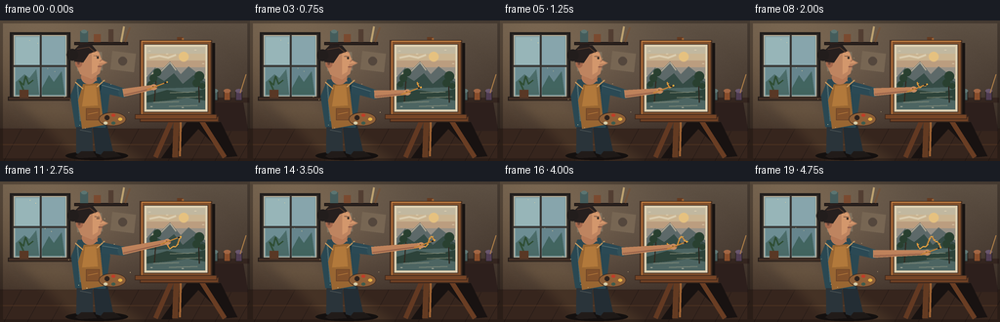
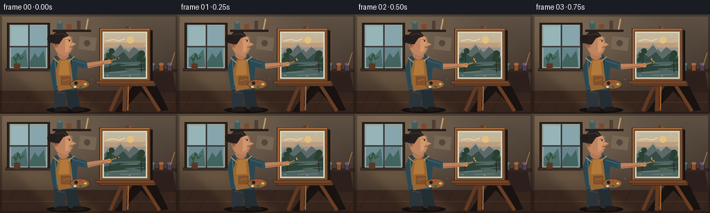

CODING AGENTS AS PIXEL WORLD MODELS
traex/GPT-5.6-Sol · motion_rationality_0038
点击播放 · 原生 RGB 像素
逐轮保存的候选
回放视频、检查图与代码变化。
每份候选均可单独播放。实际图片检查记录在下方工具轨迹中。
候选 01播放与检查图
点击播放 · 原生 RGB 像素


展开代码变化
--- 上一保存版本
+++ 本次保存版本
@@ -0,0 +1,253 @@
+from pathlib import Path
+import math
+import numpy as np
+from PIL import Image, ImageDraw, ImageFilter
+import artifact_io
+
+W,H,N,FPS = 256,144,20,4.0
+S=4
+rng=np.random.default_rng(38)
+# Stable fine-grain texture shared by all frames (avoids temporal shimmer)
+grain=rng.normal(0,1.6,(H*S,W*S,1)).astype(np.float32)
+
+def q(v): return int(round(v*S))
+def pts(seq): return [(q(x),q(y)) for x,y in seq]
+
+class Art:
+ def __init__(self, im):
+ self.im=im; self.d=ImageDraw.Draw(im,'RGBA')
+ def poly(self,p,fill,outline=None,w=1): self.d.polygon(pts(p),fill=fill)
+ def ell(self,b,fill,outline=None,w=1):
+ bb=tuple(q(x) for x in b); self.d.ellipse(bb,fill=fill,outline=outline,width=max(1,q(w)))
+ def rect(self,b,fill,outline=None,w=1):
+ bb=tuple(q(x) for x in b); self.d.rectangle(bb,fill=fill,outline=outline,width=max(1,q(w)))
+ def line(self,p,fill,w=1,joint='curve'): self.d.line(pts(p),fill=fill,width=max(1,q(w)),joint=joint)
+
+# continuous brush-tip trajectory, coordinates on the canvas
+def brush_path(u):
+ x=171.0+24.0*u
+ y=63.0 + 5.5*math.sin(2*math.pi*1.15*u) + 1.7*math.sin(2*math.pi*3.0*u)
+ return x,y
+
+def base_image():
+ yy,xx=np.mgrid[0:H*S,0:W*S]
+ # warm, softly vignetted studio plaster
+ base=np.zeros((H*S,W*S,3),dtype=np.float32)
+ top=np.array([104,91,78.]); bot=np.array([58,45,39.])
+ f=(yy/(H*S-1))[...,None]
+ base=top*(1-f)+bot*f
+ glow=np.exp(-(((xx-42*S)/(92*S))**2+((yy-38*S)/(75*S))**2))[...,None]
+ base += glow*np.array([34,27,17.])
+ vign=np.clip(((xx-W*S/2)/(W*S/2))**2+((yy-H*S/2)/(H*S/2))**2,0,1)[...,None]
+ base-=vign*10
+ base+=grain
+ return Image.fromarray(np.uint8(np.clip(base,0,255)),'RGB').convert('RGBA')
+
+def draw_background(a,t):
+ # plaster seams and floor
+ a.line([(0,111),(256,111)],(36,27,25,180),1)
+ a.poly([(0,111),(256,111),(256,144),(0,144)],(54,37,29,255))
+ for x in range(-20,280,24):
+ a.line([(x,144),(x+18,111)],(33,23,20,110),.55)
+ a.line([(0,127),(256,127)],(92,58,37,100),.5)
+ # window recess and cool daylight
+ a.rect((10,12,72,82),(47,42,39,255),(31,28,27,255),2)
+ a.rect((14,15,68,78),(127,157,163,255),(190,181,158,170),1)
+ # faint sky panes
+ a.rect((16,17,40,45),(151,181,184,255))
+ a.rect((43,17,66,45),(135,165,172,255))
+ a.rect((16,48,40,76),(109,142,148,255))
+ a.rect((43,48,66,76),(102,133,141,255))
+ a.line([(41.5,15),(41.5,78)],(55,53,50,255),2)
+ a.line([(14,46.5),(68,46.5)],(55,53,50,255),2)
+ # blurred buildings/trees outside
+ a.poly([(16,63),(25,55),(30,59),(37,50),(40,76),(16,76)],(75,108,105,150))
+ a.poly([(43,69),(50,56),(55,63),(63,52),(66,76),(43,76)],(66,101,96,150))
+ # sill objects
+ a.rect((8,78,74,82),(67,48,38,255),(34,27,24,255),1)
+ a.rect((20,71,29,79),(90,56,37,255))
+ a.line([(24,71),(20,62),(24,66),(26,57),(29,65),(34,61)],(46,77,50,255),1.4)
+ # back shelf with jars / rolled canvases
+ a.rect((76,22,131,25),(47,35,31,255),(28,23,22,255),1)
+ a.rect((82,11,90,22),(68,92,91,255))
+ a.ell((83,9.5,89,13),(92,117,113,255))
+ a.rect((96,14,103,22),(122,74,48,255))
+ a.rect((111,9,116,22),(82,62,50,255))
+ a.line([(124,22),(127,6)],(188,161,112,255),2)
+ a.line([(128,22),(133,7)],(114,82,57,255),2)
+ # pinned studies
+ a.poly([(78,34),(104,32),(105,51),(79,52)],(131,116,96,255),(61,51,44,255))
+ a.line([(83,47),(90,38),(98,47)],(76,67,58,255),.8)
+ a.poly([(115,31),(139,34),(137,53),(113,50)],(119,102,83,255))
+ a.ell((121,37,130,46),(84,71,61,150))
+ # strong diagonal light pool
+ light=Image.new('RGBA',a.im.size,(0,0,0,0)); ld=ImageDraw.Draw(light,'RGBA')
+ ld.polygon(pts([(11,81),(67,80),(153,144),(76,144)]),fill=(231,189,119,22))
+ light=light.filter(ImageFilter.GaussianBlur(q(6)))
+ a.im.alpha_composite(light)
+ # background table with paint pots
+ a.rect((207,79,255,84),(52,37,31,255))
+ a.poly([(213,84),(249,84),(254,113),(209,113)],(45,31,28,255))
+ for x,c in [(216,(73,95,92,255)),(229,(137,77,43,255)),(241,(80,61,83,255))]:
+ a.rect((x,72,x+7,82),c,(38,31,29,255),.7); a.ell((x,70,x+7,74),tuple(min(255,k+25) for k in c[:3])+(255,))
+ a.line([(246,74),(252,55)],(173,126,72,255),1)
+
+def draw_easel_and_canvas(a,u):
+ # cast shadow and wooden easel behind the panel
+ a.poly([(164,104),(226,104),(243,139),(232,140),(203,111),(176,141),(165,141),(191,104)],(24,18,17,130))
+ a.line([(184,17),(179,140)],(100,59,34,255),6)
+ a.line([(187,18),(184,139)],(163,101,52,255),2)
+ a.line([(202,96),(230,140)],(105,61,35,255),5)
+ a.line([(177,99),(159,140)],(99,57,34,255),5)
+ a.rect((143,98,224,104),(111,64,36,255),(60,39,28,255),1)
+ # panel shadow, outer frame, linen
+ a.rect((146,23,220,101),(24,19,18,120))
+ a.rect((143,20,217,98),(129,79,43,255),(65,43,31,255),1.2)
+ a.rect((147,24,213,94),(222,209,179,255),(73,56,44,255),.8)
+ # existing landscape painting: sky
+ a.rect((150,27,210,91),(174,169,150,255))
+ for j,col in enumerate([(193,184,160,255),(202,180,145,255),(187,157,127,255),(151,145,135,255)]):
+ y=27+j*7
+ a.rect((150,y,210,y+8),col)
+ # clouds and setting sun
+ a.ell((183,32,193,42),(229,193,128,210))
+ a.line([(153,38),(163,36),(172,38),(180,35)],(220,207,178,130),2)
+ # mountains, far and near
+ a.poly([(150,58),(159,48),(164,52),(174,42),(185,55),(193,47),(210,60),(210,70),(150,70)],(93,105,105,255))
+ a.line([(155,56),(160,49),(164,53),(174,43),(180,51)],(188,180,158,210),1)
+ a.poly([(150,65),(160,57),(168,62),(178,54),(187,65),(198,56),(210,63),(210,78),(150,78)],(53,75,69,255))
+ # lake and banks
+ a.poly([(150,70),(210,68),(210,91),(150,91)],(77,101,98,255))
+ a.poly([(150,77),(171,71),(192,74),(210,70),(210,82),(192,79),(171,82),(150,84)],(45,67,58,255))
+ for yy,x1,x2 in [(74,174,200),(79,181,207),(84,157,183),(88,173,202)]:
+ a.line([(x1,yy),(x2,yy-1)],(154,156,132,170),.7)
+ # tree trunks / foliage already present
+ a.line([(158,83),(160,56)],(51,43,34,255),1.3)
+ a.line([(204,84),(203,55)],(45,38,31,255),1.2)
+ for x,y,r in [(157,59,4),(161,53,4),(154,65,3),(204,57,5),(201,64,4),(207,67,3)]:
+ a.ell((x-r,y-r,x+r,y+r),(41,64,48,230))
+ # linen flecks
+ for x,y in [(152,31),(207,44),(154,88),(199,30),(186,89),(170,34)]:
+ a.line([(x,y),(x+2,y)],(236,220,188,65),.45)
+ # newly accumulated warm highlight; continuous, causal paint trail
+ if u>0:
+ samples=max(2,int(90*u))
+ trail=[brush_path(v) for v in np.linspace(0,u,samples)]
+ a.line(trail,(217,143,56,255),1.35)
+ # small deliberate broken impasto dabs along completed stroke
+ for k in range(2,samples,9):
+ x,y=trail[k]
+ a.line([(x-.8,y+.4),(x+1.4,y-.5)],(242,181,77,245),.85)
+ # inner bevel highlights
+ a.line([(145,21),(216,21)],(203,135,71,180),1)
+ a.line([(145,21),(145,97)],(190,119,61,160),1)
+ a.line([(216,22),(216,97)],(64,42,31,170),1)
+ a.rect((138,96,222,101),(118,69,38,255),(61,39,28,255),.8)
+
+def limb_polygon(p0,p1,r0,r1):
+ x0,y0=p0; x1,y1=p1; dx=x1-x0;dy=y1-y0; L=max(.01,math.hypot(dx,dy)); nx=-dy/L;ny=dx/L
+ return [(x0+nx*r0,y0+ny*r0),(x1+nx*r1,y1+ny*r1),(x1-nx*r1,y1-ny*r1),(x0-nx*r0,y0-ny*r0)]
+
+def draw_person(a,i,u):
+ # tiny natural weight shift and breathing
+ bob=.55*math.sin(2*math.pi*u)
+ sway=.7*math.sin(2*math.pi*u*.55)
+ # ground shadow
+ a.ell((67,134,131,143),(20,16,15,120))
+ # legs behind torso
+ a.poly([(78+sway,101),(94+sway,101),(95,136),(87,139),(78,136)],(42,52,58,255))
+ a.poly([(94+sway,101),(108+sway,101),(116,136),(108,139),(98,136)],(35,45,52,255))
+ a.line([(82,112),(93,114)],(72,81,83,140),1)
+ # boots
+ a.poly([(83,134),(95,134),(99,140),(81,141),(77,139)],(33,27,25,255))
+ a.poly([(106,134),(117,134),(124,139),(107,141),(102,139)],(30,25,23,255))
+ # rear arm holding palette
+ a.line([(88+sway,69+bob),(82,91),(103,101)],(36,58,67,255),9)
+ a.ell((98,96,107,104),(177,120,88,255))
+ # torso/shirt silhouette
+ a.poly([(79+sway,60+bob),(102+sway,58+bob),(112+sway,76+bob),(108,110),(77,109),(72+sway,77+bob)],(42,72,82,255))
+ # shirt lit folds
+ a.line([(79,65),(82,103)],(76,104,108,180),1.4)
+ a.line([(103,64),(99,103)],(24,52,62,180),1.4)
+ # apron
+ a.poly([(85+sway,65+bob),(101+sway,64+bob),(106,107),(84,111),(80,82)],(153,102,50,255))
+ a.poly([(87,67),(98,66),(100,87),(84,88)],(178,121,59,255))
+ a.line([(85,70),(77,63)],(202,153,91,255),1.2)
+ a.line([(99,68),(107,61)],(202,153,91,255),1.2)
+ a.rect((88,90,102,102),(130,81,43,255),(99,61,38,255),.6)
+ a.line([(90,96),(100,94)],(188,127,61,180),.8)
+ # neck
+ a.poly([(84+sway,58+bob),(86+sway,48+bob),(98+sway,49+bob),(99+sway,62+bob)],(177,117,84,255))
+ a.ell((83+sway,51+bob,99+sway,65+bob),(181,120,86,255))
+ # head in right-facing profile, ear and nose/chin silhouette
+ face=[(79+sway,28+bob),(91+sway,26+bob),(101+sway,32+bob),(104+sway,40+bob),(110+sway,43+bob),(104+sway,46+bob),(102+sway,54+bob),(94+sway,60+bob),(82+sway,55+bob),(77+sway,43+bob)]
+ a.poly(face,(190,132,96,255))
+ # face light and shadow
+ a.poly([(94+sway,29+bob),(101+sway,33+bob),(103+sway,40+bob),(108+sway,43+bob),(101+sway,44+bob),(99+sway,52+bob),(94+sway,55+bob)],(211,151,108,130))
+ a.ell((77+sway,40+bob,84+sway,48+bob),(166,105,77,255))
+ a.ell((79+sway,42+bob,81.5+sway,45+bob),(113,75,62,180))
+ # hair cap and bun
+ a.poly([(76+sway,42+bob),(75+sway,31+bob),(82+sway,24+bob),(94+sway,25+bob),(99+sway,31+bob),(91+sway,34+bob),(85+sway,43+bob)],(38,31,30,255))
+ a.ell((68+sway,29+bob,80+sway,41+bob),(34,29,28,255))
+ a.line([(79+sway,29+bob),(91+sway,27+bob),(97+sway,32+bob)],(82,57,43,200),1)
+ # brow, eye, nose, lips
+ a.line([(96+sway,36+bob),(101+sway,36.5+bob)],(69,47,42,255),.8)
+ blink = (i==11)
+ if blink: a.line([(98+sway,38+bob),(101+sway,38+bob)],(45,37,35,255),.7)
+ else: a.ell((99+sway,37+bob,101+sway,39+bob),(35,34,32,255))
+ a.line([(104+sway,40+bob),(102+sway,42+bob)],(132,81,65,255),.55)
+ a.line([(104+sway,47+bob),(100+sway,47+bob)],(109,62,57,255),.7)
+ # palette in left hand (foreground)
+ a.ell((101,94,129,108),(143,96,56,255),(69,48,35,255),.8)
+ a.ell((107,97,112,102),(46,34,29,255))
+ for x,y,c in [(116,97,(192,62,40,255)),(123,101,(230,181,71,255)),(116,105,(61,91,77,255)),(108,105,(215,206,169,255))]:
+ a.ell((x-2,y-1.5,x+2,y+1.5),c)
+ # painting arm, articulated so the hand follows the tip without jumps
+ tipx,tipy=brush_path(u)
+ shoulder=(104+sway,68+bob)
+ elbow=(126+1.5*math.sin(2*math.pi*u),73+2.5*math.sin(2*math.pi*u+.4))
+ hand=(tipx-14.0,tipy+5.2)
+ # sleeve upper arm
+ a.poly(limb_polygon(shoulder,elbow,5.6,4.7),(43,73,84,255))
+ a.line([(shoulder[0],shoulder[1]-2),(elbow[0],elbow[1]-2)],(81,107,111,130),1)
+ a.ell((elbow[0]-4.8,elbow[1]-4.8,elbow[0]+4.8,elbow[1]+4.8),(50,80,88,255))
+ # forearm, shaded underside
+ a.poly(limb_polygon(elbow,hand,4.0,2.5),(190,130,91,255))
+ a.line([(elbow[0]+1,elbow[1]+2),(hand[0],hand[1]+1)],(133,83,66,130),1)
+ a.ell((hand[0]-3.2,hand[1]-3.0,hand[0]+3.8,hand[1]+3.0),(201,141,98,255))
+ # fingers gripping a thin ochre brush
+ a.line([(hand[0]-1,hand[1]-1),(hand[0]+4,hand[1])],(110,67,54,220),1)
+ # brush handle aligns exactly with active paint point
+ vx=tipx-hand[0]; vy=tipy-hand[1]; L=math.hypot(vx,vy); ux=vx/L; uy=vy/L
+ back=(hand[0]-ux*7,hand[1]-uy*7)
+ a.line([back,(tipx-ux*1.4,tipy-uy*1.4)],(196,131,53,255),1.15)
+ a.line([(tipx-ux*3,tipy-uy*3),(tipx,tipy)],(38,34,31,255),1.6)
+ a.ell((tipx-.85,tipy-.85,tipx+.85,tipy+.85),(236,170,65,255))
+
+def render(i):
+ u=i/(N-1)
+ im=base_image(); a=Art(im)
+ draw_background(a,u)
+ draw_easel_and_canvas(a,u)
+ draw_person(a,i,u)
+ # airborne dust in window light, drifting consistently
+ for k in range(12):
+ x=30+(k*17)%112 + 1.8*math.sin(u*5+k)
+ y=20+(k*29)%100 - 2*u
+ if y<12:y+=105
+ a.ell((x,y,x+.55,y+.55),(242,218,161,60+20*(k%2)))
+ # soft cinematic edge vignette
+ ov=Image.new('RGBA',im.size,(0,0,0,0)); od=ImageDraw.Draw(ov,'RGBA')
+ od.rectangle((0,0,W*S,H*S),outline=(18,13,12,85),width=q(3))
+ im=Image.alpha_composite(im,ov).convert('RGB').resize((W,H),Image.Resampling.LANCZOS)
+ return np.asarray(im,dtype=np.uint8)
+
+def main():
+ frames=np.stack([render(i) for i in range(N)],axis=0)
+ artifact_io.save(frames,Path(__file__).resolve().parent)
+ print('saved',frames.shape,frames.dtype,'range',frames.min(),frames.max())
+ # motion/readability diagnostics
+ diffs=np.mean(np.abs(frames[1:].astype(np.int16)-frames[:-1].astype(np.int16)),axis=(1,2,3))
+ print('mean frame deltas:',np.round(diffs,3).tolist())
+
+if __name__=='__main__': main()
可观测工具轨迹
实际执行的命令与返回图片。
命令 1exit 0
/bin/bash -lc "cat prompt.txt && printf '\\n--- RULES ---\\n' && cat GENERATION_RULES.md && printf '\\n--- SPEC ---\\n' && cat task_spec.json"
命令 2exit 1
/bin/bash -lc "find . -maxdepth 2 -type f -printf '%p %s bytes\\n' | sort && printf '\\nTools:\\n' && command -v ffmpeg && command -v python3 && python3 - <<'PY'
try:
import cv2; print('cv2',cv2.__version__)
except Exception as e: print('no cv2',e)
try:
from PIL import Image; print('PIL ok')
except Exception as e: print('no PIL',e)
try:
import numpy as np; print('numpy',np.__version__)
except Exception as e: print('no numpy',e)
PY"命令 3exit 0
/bin/bash -lc "cat artifact_io.py; command -v ffmpeg || true; python3 - <<'PY' mods=['PIL','numpy','cv2','imageio'] for m in mods: try: x=__import__(m); print(m,'ok',getattr(x,'__version__','')) except Exception as e: print(m,'NO',e) PY"
命令 4exit 0
/bin/bash -lc "cat > generate.py <<'PY'
from pathlib import Path
import math
import numpy as np
from PIL import Image, ImageDraw, ImageFilter
import artifact_io
W,H,N,FPS = 256,144,20,4.0
S=4
rng=np.random.default_rng(38)
# Stable fine-grain texture shared by all frames (avoids temporal shimmer)
grain=rng.normal(0,1.6,(H*S,W*S,1)).astype(np.float32)
def q(v): return int(round(v*S))
def pts(seq): return [(q(x),q(y)) for x,y in seq]
class Art:
def __init__(self, im):
self.im=im; self.d=ImageDraw.Draw(im,'RGBA')
def poly(self,p,fill,outline=None,w=1): self.d.polygon(pts(p),fill=fill)
def ell(self,b,fill,outline=None,w=1):
bb=tuple(q(x) for x in b); self.d.ellipse(bb,fill=fill,outline=outline,width=max(1,q(w)))
def rect(self,b,fill,outline=None,w=1):
bb=tuple(q(x) for x in b); self.d.rectangle(bb,fill=fill,outline=outline,width=max(1,q(w)))
def line(self,p,fill,w=1,joint='curve'): self.d.line(pts(p),fill=fill,width=max(1,q(w)),joint=joint)
# continuous brush-tip trajectory, coordinates on the canvas
def brush_path(u):
x=171.0+24.0*u
y=63.0 + 5.5*math.sin(2*math.pi*1.15*u) + 1.7*math.sin(2*math.pi*3.0*u)
return x,y
def base_image():
yy,xx=np.mgrid[0:H*S,0:W*S]
# warm, softly vignetted studio plaster
base=np.zeros((H*S,W*S,3),dtype=np.float32)
top=np.array([104,91,78.]); bot=np.array([58,45,39.])
f=(yy/(H*S-1))[...,None]
base=top*(1-f)+bot*f
glow=np.exp(-(((xx-42*S)/(92*S))**2+((yy-38*S)/(75*S))**2))[...,None]
base += glow*np.array([34,27,17.])
vign=np.clip(((xx-W*S/2)/(W*S/2))**2+((yy-H*S/2)/(H*S/2))**2,0,1)[...,None]
base-=vign*10
base+=grain
return Image.fromarray(np.uint8(np.clip(base,0,255)),'RGB').convert('RGBA')
def draw_background(a,t):
# plaster seams and floor
a.line([(0,111),(256,111)],(36,27,25,180),1)
a.poly([(0,111),(256,111),(256,144),(0,144)],(54,37,29,255))
for x in range(-20,280,24):
a.line([(x,144),(x+18,111)],(33,23,20,110),.55)
a.line([(0,127),(256,127)],(92,58,37,100),.5)
# window recess and cool daylight
a.rect((10,12,72,82),(47,42,39,255),(31,28,27,255),2)
a.rect((14,15,68,78),(127,157,163,255),(190,181,158,170),1)
# faint sky panes
a.rect((16,17,40,45),(151,181,184,255))
a.rect((43,17,66,45),(135,165,172,255))
a.rect((16,48,40,76),(109,142,148,255))
a.rect((43,48,66,76),(102,133,141,255))
a.line([(41.5,15),(41.5,78)],(55,53,50,255),2)
a.line([(14,46.5),(68,46.5)],(55,53,50,255),2)
# blurred buildings/trees outside
a.poly([(16,63),(25,55),(30,59),(37,50),(40,76),(16,76)],(75,108,105,150))
a.poly([(43,69),(50,56),(55,63),(63,52),(66,76),(43,76)],(66,101,96,150))
# sill objects
a.rect((8,78,74,82),(67,48,38,255),(34,27,24,255),1)
a.rect((20,71,29,79),(90,56,37,255))
a.line([(24,71),(20,62),(24,66),(26,57),(29,65),(34,61)],(46,77,50,255),1.4)
# back shelf with jars / rolled canvases
a.rect((76,22,131,25),(47,35,31,255),(28,23,22,255),1)
a.rect((82,11,90,22),(68,92,91,255))
a.ell((83,9.5,89,13),(92,117,113,255))
a.rect((96,14,103,22),(122,74,48,255))
a.rect((111,9,116,22),(82,62,50,255))
a.line([(124,22),(127,6)],(188,161,112,255),2)
a.line([(128,22),(133,7)],(114,82,57,255),2)
# pinned studies
a.poly([(78,34),(104,32),(105,51),(79,52)],(131,116,96,255),(61,51,44,255))
a.line([(83,47),(90,38),(98,47)],(76,67,58,255),.8)
a.poly([(115,31),(139,34),(137,53),(113,50)],(119,102,83,255))
a.ell((121,37,130,46),(84,71,61,150))
# strong diagonal light pool
light=Image.new('RGBA',a.im.size,(0,0,0,0)); ld=ImageDraw.Draw(light,'RGBA')
ld.polygon(pts([(11,81),(67,80),(153,144),(76,144)]),fill=(231,189,119,22))
light=light.filter(ImageFilter.GaussianBlur(q(6)))
a.im.alpha_composite(light)
# background table with paint pots
a.rect((207,79,255,84),(52,37,31,255))
a.poly([(213,84),(249,84),(254,113),(209,113)],(45,31,28,255))
for x,c in [(216,(73,95,92,255)),(229,(137,77,43,255)),(241,(80,61,83,255))]:
a.rect((x,72,x+7,82),c,(38,31,29,255),.7); a.ell((x,70,x+7,74),tuple(min(255,k+25) for k in c[:3])+(255,))
a.line([(246,74),(252,55)],(173,126,72,255),1)
def draw_easel_and_canvas(a,u):
# cast shadow and wooden easel behind the panel
a.poly([(164,104),(226,104),(243,139),(232,140),(203,111),(176,141),(165,141),(191,104)],(24,18,17,130))
a.line([(184,17),(179,140)],(100,59,34,255),6)
a.line([(187,18),(184,139)],(163,101,52,255),2)
a.line([(202,96),(230,140)],(105,61,35,255),5)
a.line([(177,99),(159,140)],(99,57,34,255),5)
a.rect((143,98,224,104),(111,64,36,255),(60,39,28,255),1)
# panel shadow, outer frame, linen
a.rect((146,23,220,101),(24,19,18,120))
a.rect((143,20,217,98),(129,79,43,255),(65,43,31,255),1.2)
a.rect((147,24,213,94),(222,209,179,255),(73,56,44,255),.8)
# existing landscape painting: sky
a.rect((150,27,210,91),(174,169,150,255))
for j,col in enumerate([(193,184,160,255),(202,180,145,255),(187,157,127,255),(151,145,135,255)]):
y=27+j*7
a.rect((150,y,210,y+8),col)
# clouds and setting sun
a.ell((183,32,193,42),(229,193,128,210))
a.line([(153,38),(163,36),(172,38),(180,35)],(220,207,178,130),2)
# mountains, far and near
a.poly([(150,58),(159,48),(164,52),(174,42),(185,55),(193,47),(210,60),(210,70),(150,70)],(93,105,105,255))
a.line([(155,56),(160,49),(164,53),(174,43),(180,51)],(188,180,158,210),1)
a.poly([(150,65),(160,57),(168,62),(178,54),(187,65),(198,56),(210,63),(210,78),(150,78)],(53,75,69,255))
# lake and banks
a.poly([(150,70),(210,68),(210,91),(150,91)],(77,101,98,255))
a.poly([(150,77),(171,71),(192,74),(210,70),(210,82),(192,79),(171,82),(150,84)],(45,67,58,255))
for yy,x1,x2 in [(74,174,200),(79,181,207),(84,157,183),(88,173,202)]:
a.line([(x1,yy),(x2,yy-1)],(154,156,132,170),.7)
# tree trunks / foliage already present
a.line([(158,83),(160,56)],(51,43,34,255),1.3)
a.line([(204,84),(203,55)],(45,38,31,255),1.2)
for x,y,r in [(157,59,4),(161,53,4),(154,65,3),(204,57,5),(201,64,4),(207,67,3)]:
a.ell((x-r,y-r,x+r,y+r),(41,64,48,230))
# linen flecks
for x,y in [(152,31),(207,44),(154,88),(199,30),(186,89),(170,34)]:
a.line([(x,y),(x+2,y)],(236,220,188,65),.45)
# newly accumulated warm highlight; continuous, causal paint trail
if u>0:
samples=max(2,int(90*u))
trail=[brush_path(v) for v in np.linspace(0,u,samples)]
a.line(trail,(217,143,56,255),1.35)
# small deliberate broken impasto dabs along completed stroke
for k in range(2,samples,9):
x,y=trail[k]
a.line([(x-.8,y+.4),(x+1.4,y-.5)],(242,181,77,245),.85)
# inner bevel highlights
a.line([(145,21),(216,21)],(203,135,71,180),1)
a.line([(145,21),(145,97)],(190,119,61,160),1)
a.line([(216,22),(216,97)],(64,42,31,170),1)
a.rect((138,96,222,101),(118,69,38,255),(61,39,28,255),.8)
def limb_polygon(p0,p1,r0,r1):
x0,y0=p0; x1,y1=p1; dx=x1-x0;dy=y1-y0; L=max(.01,math.hypot(dx,dy)); nx=-dy/L;ny=dx/L
return [(x0+nx*r0,y0+ny*r0),(x1+nx*r1,y1+ny*r1),(x1-nx*r1,y1-ny*r1),(x0-nx*r0,y0-ny*r0)]
def draw_person(a,i,u):
# tiny natural weight shift and breathing
bob=.55*math.sin(2*math.pi*u)
sway=.7*math.sin(2*math.pi*u*.55)
# ground shadow
a.ell((67,134,131,143),(20,16,15,120))
# legs behind torso
a.poly([(78+sway,101),(94+sway,101),(95,136),(87,139),(78,136)],(42,52,58,255))
a.poly([(94+sway,101),(108+sway,101),(116,136),(108,139),(98,136)],(35,45,52,255))
a.line([(82,112),(93,114)],(72,81,83,140),1)
# boots
a.poly([(83,134),(95,134),(99,140),(81,141),(77,139)],(33,27,25,255))
a.poly([(106,134),(117,134),(124,139),(107,141),(102,139)],(30,25,23,255))
# rear arm holding palette
a.line([(88+sway,69+bob),(82,91),(103,101)],(36,58,67,255),9)
a.ell((98,96,107,104),(177,120,88,255))
# torso/shirt silhouette
a.poly([(79+sway,60+bob),(102+sway,58+bob),(112+sway,76+bob),(108,110),(77,109),(72+sway,77+bob)],(42,72,82,255))
# shirt lit folds
a.line([(79,65),(82,103)],(76,104,108,180),1.4)
a.line([(103,64),(99,103)],(24,52,62,180),1.4)
# apron
a.poly([(85+sway,65+bob),(101+sway,64+bob),(106,107),(84,111),(80,82)],(153,102,50,255))
a.poly([(87,67),(98,66),(100,87),(84,88)],(178,121,59,255))
a.line([(85,70),(77,63)],(202,153,91,255),1.2)
a.line([(99,68),(107,61)],(202,153,91,255),1.2)
a.rect((88,90,102,102),(130,81,43,255),(99,61,38,255),.6)
a.line([(90,96),(100,94)],(188,127,61,180),.8)
# neck
a.poly([(84+sway,58+bob),(86+sway,48+bob),(98+sway,49+bob),(99+sway,62+bob)],(177,117,84,255))
a.ell((83+sway,51+bob,99+sway,65+bob),(181,120,86,255))
# head in right-facing profile, ear and nose/chin silhouette
face=[(79+sway,28+bob),(91+sway,26+bob),(101+sway,32+bob),(104+sway,40+bob),(110+sway,43+bob),(104+sway,46+bob),(102+sway,54+bob),(94+sway,60+bob),(82+sway,55+bob),(77+sway,43+bob)]
a.poly(face,(190,132,96,255))
# face light and shadow
a.poly([(94+sway,29+bob),(101+sway,33+bob),(103+sway,40+bob),(108+sway,43+bob),(101+sway,44+bob),(99+sway,52+bob),(94+sway,55+bob)],(211,151,108,130))
a.ell((77+sway,40+bob,84+sway,48+bob),(166,105,77,255))
a.ell((79+sway,42+bob,81.5+sway,45+bob),(113,75,62,180))
# hair cap and bun
a.poly([(76+sway,42+bob),(75+sway,31+bob),(82+sway,24+bob),(94+sway,25+bob),(99+sway,31+bob),(91+sway,34+bob),(85+sway,43+bob)],(38,31,30,255))
a.ell((68+sway,29+bob,80+sway,41+bob),(34,29,28,255))
a.line([(79+sway,29+bob),(91+sway,27+bob),(97+sway,32+bob)],(82,57,43,200),1)
# brow, eye, nose, lips
a.line([(96+sway,36+bob),(101+sway,36.5+bob)],(69,47,42,255),.8)
blink = (i==11)
if blink: a.line([(98+sway,38+bob),(101+sway,38+bob)],(45,37,35,255),.7)
else: a.ell((99+sway,37+bob,101+sway,39+bob),(35,34,32,255))
a.line([(104+sway,40+bob),(102+sway,42+bob)],(132,81,65,255),.55)
a.line([(104+sway,47+bob),(100+sway,47+bob)],(109,62,57,255),.7)
# palette in left hand (foreground)
a.ell((101,94,129,108),(143,96,56,255),(69,48,35,255),.8)
a.ell((107,97,112,102),(46,34,29,255))
for x,y,c in [(116,97,(192,62,40,255)),(123,101,(230,181,71,255)),(116,105,(61,91,77,255)),(108,105,(215,206,169,255))]:
a.ell((x-2,y-1.5,x+2,y+1.5),c)
# painting arm, articulated so the hand follows the tip without jumps
tipx,tipy=brush_path(u)
shoulder=(104+sway,68+bob)
elbow=(126+1.5*math.sin(2*math.pi*u),73+2.5*math.sin(2*math.pi*u+.4))
hand=(tipx-14.0,tipy+5.2)
# sleeve upper arm
a.poly(limb_polygon(shoulder,elbow,5.6,4.7),(43,73,84,255))
a.line([(shoulder[0],shoulder[1]-2),(elbow[0],elbow[1]-2)],(81,107,111,130),1)
a.ell((elbow[0]-4.8,elbow[1]-4.8,elbow[0]+4.8,elbow[1]+4.8),(50,80,88,255))
# forearm, shaded underside
a.poly(limb_polygon(elbow,hand,4.0,2.5),(190,130,91,255))
a.line([(elbow[0]+1,elbow[1]+2),(hand[0],hand[1]+1)],(133,83,66,130),1)
a.ell((hand[0]-3.2,hand[1]-3.0,hand[0]+3.8,hand[1]+3.0),(201,141,98,255))
# fingers gripping a thin ochre brush
a.line([(hand[0]-1,hand[1]-1),(hand[0]+4,hand[1])],(110,67,54,220),1)
# brush handle aligns exactly with active paint point
vx=tipx-hand[0]; vy=tipy-hand[1]; L=math.hypot(vx,vy); ux=vx/L; uy=vy/L
back=(hand[0]-ux*7,hand[1]-uy*7)
a.line([back,(tipx-ux*1.4,tipy-uy*1.4)],(196,131,53,255),1.15)
a.line([(tipx-ux*3,tipy-uy*3),(tipx,tipy)],(38,34,31,255),1.6)
a.ell((tipx-.85,tipy-.85,tipx+.85,tipy+.85),(236,170,65,255))
def render(i):
u=i/(N-1)
im=base_image(); a=Art(im)
draw_background(a,u)
draw_easel_and_canvas(a,u)
draw_person(a,i,u)
# airborne dust in window light, drifting consistently
for k in range(12):
x=30+(k*17)%112 + 1.8*math.sin(u*5+k)
y=20+(k*29)%100 - 2*u
if y<12:y+=105
a.ell((x,y,x+.55,y+.55),(242,218,161,60+20*(k%2)))
# soft cinematic edge vignette
ov=Image.new('RGBA',im.size,(0,0,0,0)); od=ImageDraw.Draw(ov,'RGBA')
od.rectangle((0,0,W*S,H*S),outline=(18,13,12,85),width=q(3))
im=Image.alpha_composite(im,ov).convert('RGB').resize((W,H),Image.Resampling.LANCZOS)
return np.asarray(im,dtype=np.uint8)
def main():
frames=np.stack([render(i) for i in range(N)],axis=0)
artifact_io.save(frames,Path(__file__).resolve().parent)
print('saved',frames.shape,frames.dtype,'range',frames.min(),frames.max())
# motion/readability diagnostics
diffs=np.mean(np.abs(frames[1:].astype(np.int16)-frames[:-1].astype(np.int16)),axis=(1,2,3))
print('mean frame deltas:',np.round(diffs,3).tolist())
if __name__=='__main__': main()
PY
python3 generate.py
ls -lh pixels.npz inspection.png transition_check.png index.html frames/00.png frames/19.png"保存候选 1 份；完成命令 4 次；可验证图片返回 0 张。原始 API 响应与完整日志保留在本地。